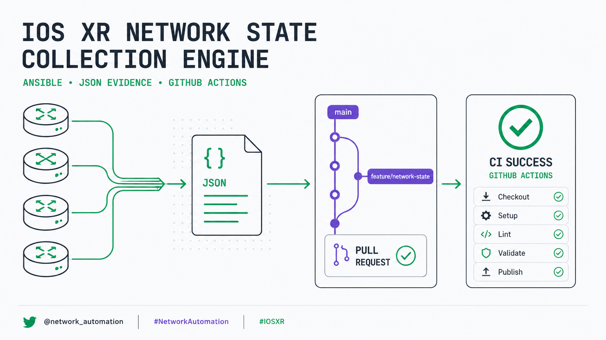

IOS XR Network State Collection Engine
A complete technical lab manual for building a deterministic, read-only collector, preserving one JSON evidence file per router, and taking the change through Git, GitHub Actions, a Pull Request, a controlled merge, and branch cleanup.

What This Lab Delivered
This was a long piece of work because we did not merely create a playbook. We built and validated the first phase of a Cisco IOS XR automation platform using a workflow similar to the one used in production.
The final result is a deterministic, read-only Collection Engine that connects to IOS XR routers, executes operational commands, saves one JSON evidence file per device, and continues even when some nodes are powered off.
Quick NetDevOps Flow
For readers newer to NetDevOps, the complete delivery model can be reduced to four connected stages:
17
IOS XR devices in inventory
8
Read-only commands per reachable device
4
Atomic feature commits
1
JSON file per device and run
On This Lab Manual
Foundation and Environment
1. General Lab Objective
The objective was to start building this platform:
IOS XR Network Validation and Change Automation Platform
IOS XR Devices
│
▼
Collection Engine
│
▼
Raw JSON Evidence
│
▼
Structured Parsers
│
▼
Expected-State Validation
│
├── PASS
├── WARN
└── FAIL
│
▼
Reports / Pre-Checks / Post-Checks / RCAIn this first phase, we implemented only:
IOS XR Devices
│
▼
Read-Only Collection Engine
│
▼
One JSON File per DeviceThe collector:
- Uses only
showcommands. - Does not modify configuration.
- Generates evidence per device.
- Distinguishes reachable from unreachable devices.
- Does not stop the entire execution when one router fails.
- Excludes secret lines from the running configuration.
- Stores evidence locally and outside Git version control.
2. Repository Used
The working repository was
dfonquet/CCIE-SP-NetOps-Automation.
Its local Linux path was ~/netops/CCIE-SP-NetOps-Automation.
cd ~/netops/CCIE-SP-NetOps-Automation
cd means change directory. It changes the terminal's current
directory. After running it, every Git, Ansible, and Python command operates on this
repository.
3. Topology Included in the Inventory
The inventory was organized under the main iosxr group, with two child
groups: p_routers and pe_routers.
iosxr
├── p_routers
│ ├── P1 – P10
│ ├── P11-RR-SHADOW
│ ├── P12-RR-PRIMARY
│ └── P23-PCE
│
└── pe_routers
├── PE1
├── PE2
├── PE3
└── PE413 P / RR / PCE routers
4 PE routers
-----------------------
17 IOS XR devicesDuring this work, we specifically added:
PE2:
ansible_host: 10.255.231.102
PE3:
ansible_host: 10.255.231.103The complete inventory uses management addresses inside 10.255.231.0/24.
4. Ansible Connection Variables
The inventory defines these variables at the iosxr group, so they apply automatically to every router:
ansible_connection: ansible.netcommon.network_cli
ansible_network_os: cisco.iosxr.iosxr
ansible_network_cli_ssh_type: libssh
ansible_user: "{{ lookup('env', 'NETOPS_USER') }}"
ansible_password: "{{ lookup('env', 'NETOPS_PASSWORD') }}"ansible_connection
ansible.netcommon.network_cli tells Ansible that the target is not a normal
Linux server. Ansible connects over SSH to the CLI of a network device.
Ansible
│
▼
SSH
│
▼
IOS XR CLIansible_network_os
cisco.iosxr.iosxr identifies the remote operating system as Cisco IOS XR.
This lets Ansible know how to enter the CLI, execute commands, interpret prompts, select
collection modules, and handle IOS XR-specific errors.
ansible_network_cli_ssh_type
libssh instructs the connection to use libssh through
ansible-pylibssh. This mattered because the incorrect virtual environment
did not include that dependency.
User and password
Credentials are not written directly into the inventory. Ansible obtains
NETOPS_USER and NETOPS_PASSWORD from operating-system
environment variables. This prevents passwords from being committed accidentally to Git.
5. Activate the Correct Virtual Environment
The correct environment was automation/.venv/, not the .venv at the repository root.
source automation/.venv/bin/activate
which python
which ansibleAfter activation, the prompt shows (.venv):
(.venv) daniel@netlab-core:~/netops/CCIE-SP-NetOps-Automation$
source executes a file inside the current Bash session. Here, it loads the
virtual environment's Python, pip, Ansible, and project-specific libraries. The paths
returned by which should point to automation/.venv/bin/.
6. The ansible-pylibssh Dependency
We added ansible-pylibssh>=1.4.0 to
automation/requirements.txt. It lets network_cli use libssh to
connect to the routers.
python -m pip install -r automation/requirements.txt
python -m pip runs pip with the exact active Python interpreter. It is safer
than typing only pip, which can install libraries into another Python
environment. install requests package installation; -r means
“requirements file”; and automation/requirements.txt is the dependency list.
7. Load Credentials Securely
The repository manual documented the credential workflow as follows:
export NETOPS_USER="netops"
read -rsp "NETOPS_PASSWORD: " NETOPS_PASSWORD
echo
export NETOPS_PASSWORD-
export NETOPS_USER="netops"creates and exports theNETOPS_USERvariable. The inventory reads it withlookup('env', 'NETOPS_USER'). -
read -rsp "NETOPS_PASSWORD: " NETOPS_PASSWORDrequests the password without displaying it.readaccepts terminal input;-rprevents backslash interpretation;-senables silent mode;-pdisplays the prompt; andNETOPS_PASSWORDis the variable that temporarily receives the value. echoadds a clean newline after silent input.export NETOPS_PASSWORDmakes the value available to child processes such as Ansible.
Verify that the variable exists without displaying it:
test -n "$NETOPS_PASSWORD" && echo "Password loaded"Do not use echo "$NETOPS_PASSWORD", because that exposes the password on screen.
8. Ansible Configuration
The file used was automation/ansible.cfg:
[defaults]
inventory = inventories/local/hosts.yml
host_key_checking = False
retry_files_enabled = False
stdout_callback = ansible.builtin.default
callback_result_format = yaml
callback_format_pretty = true
timeout = 30
[persistent_connection]
connect_timeout = 60
command_timeout = 90
[paramiko_connection]
use_rsa_sha2_algorithms = falseCallback issue
The previous stdout_callback = yaml was no longer available in the Ansible
version used. We replaced it with the official default callback plus
callback_result_format = yaml and callback_format_pretty = true,
preserving readable YAML output.
| Option | Purpose |
|---|---|
inventory | Defines inventories/local/hosts.yml as the default inventory. Tests also passed it explicitly with -i to remove ambiguity. |
host_key_checking = False | Stops SSH from requesting manual fingerprint confirmation. Practical in a lab; it requires careful risk evaluation in production because it reduces man-in-the-middle protection. |
retry_files_enabled = False | Prevents Ansible from creating .retry files after failures. |
timeout = 30 | Sets Ansible's general timeout. |
connect_timeout = 60 | Allows up to 60 seconds to establish a persistent connection. |
command_timeout = 90 | Allows up to 90 seconds for a remote command, which helps virtual routers that answer slowly. |
use_rsa_sha2_algorithms = false | Helps SSH compatibility with older IOS XR images that use legacy RSA algorithms. |
9. Use ANSIBLE_CONFIG Explicitly
ANSIBLE_CONFIG=automation/ansible.cfg \
ansible-playbook ...
ANSIBLE_CONFIG=automation/ansible.cfg creates an environment variable only
for the command that follows it. It does not permanently change the terminal. The
conceptual meaning is: “Run this ansible-playbook with this
ansible.cfg file.”
This prevents Ansible from accidentally using /etc/ansible/ansible.cfg,
~/.ansible.cfg, another system file, or configuration belonging to a
different project.
10. Create the Collection Engine
The central file created was automation/playbooks/collect-network-state.yml:
---
- name: Collect structured IOS XR network state
hosts: iosxr
gather_facts: false
hosts: iosxr runs the playbook over the complete iosxr group,
so it can include both p_routers and pe_routers.
Linux servers commonly begin with a generic fact-gathering pass. Network devices do not
need that behavior here, so gather_facts: false reduces execution time,
avoids unnecessary tasks, and keeps the collector completely explicit.
Collection Engine Internals
11. Unique Run Identifier
collector_run_id: "{{ run_id | default('RUN-MANUAL') }}"
If a run_id variable is supplied, the playbook uses it; otherwise it uses
RUN-MANUAL. We created the identifier with:
export RUN_ID="RUN-COLLECT-$(date -u +%Y%m%dT%H%M%SZ)"
export RUN_ID= creates the variable. $(...) executes the
command inside the parentheses and inserts its result into the string.
date -u produces UTC time, avoiding timezone problems, simplifying evidence
comparison, and matching common logging practice.
| Token | Meaning |
|---|---|
%Y | Year |
%m | Month |
%d | Day |
T | Separator |
%H | Hour |
%M | Minute |
%S | Second |
Z | UTC marker |
Example: RUN-COLLECT-20260724T175235Z. Every execution is therefore separated.
12. Evidence Directory
evidence_dir: "{{ automation_dir }}/evidence/{{ collector_run_id }}"automation/
└── evidence/
└── RUN-COLLECT-20260724T175235Z/
└── raw/
├── P10.json
├── P23-PCE.json
└── PE1.jsonThe official pattern is automation/evidence/<RUN_ID>/raw/<DEVICE>.json.
13. Create Directories Automatically
- name: Create collection evidence directories
ansible.builtin.file:
path: "{{ item }}"
state: directory
mode: "0755"
loop:
- "{{ evidence_dir }}"
- "{{ evidence_dir }}/raw"
delegate_to: localhost
run_once: trueansible.builtin.filemanages files and directories.state: directoryrequires the path to exist as a directory and creates it when absent.mode: "0755"gives the owner read/write/execute and the group and others read/execute.- The loop runs twice: once for
automation/evidence/<RUN_ID>and once for itsrawdirectory. delegate_to: localhostcreates the folder on the Ubuntu Ansible server, not on the IOS XR router.run_once: truecreates the folder once instead of repeating the task for all 17 devices.
14. Initial Reachability Probe
- name: Probe IOS XR device reachability
cisco.iosxr.iosxr_command:
commands:
- show running-config hostname
register: device_probe
ignore_errors: true
ignore_unreachable: true
show running-config hostname is a small, safe command. It validates host
resolution, IP connectivity, the SSH port, SSH negotiation, username, password, CLI
access, and IOS XR compatibility.
register: device_probe stores the result in device_probe, which
can contain failed, unreachable, stdout,
stdout_lines, and msg.
ignore_errors: true lets the playbook continue after a failed command.
ignore_unreachable: true also lets it continue when a router cannot be
reached. Without both options, one powered-off router could stop collection for the
entire network.
15. Calculate Device State
collector_reachable: >-
{{
not (device_probe.unreachable | default(false))
and not (device_probe.failed | default(false))
}}
A device is reachable only when unreachable = false and
failed = false.
| Scenario | Result | Behavior |
|---|---|---|
| Healthy router | collector_reachable = true | The playbook executes all eight commands. |
| Powered-off router | collector_reachable = false | Operational collection is skipped, but a JSON file is still generated. |
| Incorrect credentials | collector_reachable = false | The access probe fails and the state is recorded. |
16. Commands Collected
The collector executes eight commands.
16.1 Sanitized running configuration
show running-config | exclude secret
This obtains the router's active configuration. exclude secret prevents
lines containing the word secret from being included, reducing the risk of
storing hashes or credentials.
The result can include interfaces, routing protocols, BGP, IS-IS, Segment Routing, MPLS, VRFs, route policies, prefix sets, BFD, multicast, and services. This is not a universal Data Loss Prevention solution; evidence must always be reviewed before it is shared.
16.2 Interface summary
show interfaces briefThis shows configured interfaces, administrative state, operational state, IP address, up/up links, shut interfaces, and interfaces with protocol problems. It provides a base for identifying physical or logical faults.
Interface IP-Address Status Protocol
Gi0/0/0/0 10.0.10.1 Up Up
Gi0/0/0/1 10.0.20.1 Down Down16.3 IS-IS neighbors
show isis neighborsThis verifies IS-IS adjacencies, System IDs, interfaces, adjacency state, IS-IS level, and hold time. In the backbone, it is essential for validating that the IS-IS underlay remains stable.
Expected: P10 must have 3 IS-IS neighbors
Actual: P10 has 2
Result: FAIL16.4 Global BGP summary
show bgp summaryThis shows the router ID, AS number, BGP neighbors, session state, received prefixes, and sessions in Idle, Active, or Established.
P12-RR-PRIMARY ↔ PE1 = Established
P12-RR-PRIMARY ↔ PE2 = Established
P12-RR-PRIMARY ↔ PE3 = Established
P12-RR-PRIMARY ↔ PE4 = Established16.5 BGP VPNv4 summary
show bgp vpnv4 unicast summaryThis focuses on the VPNv4 Unicast address family. It is especially important for L3VPN, Route Reflectors, VPN route distribution, PE–RR session validation, and VPNv4 NLRI propagation. A global BGP session can be established while the VPNv4 address family is inactive, which is why both BGP commands are collected.
16.6 MPLS forwarding
show mpls forwardingThis displays the LFIB — Label Forwarding Information Base — including local labels, outgoing labels, prefixes, next hops, outgoing interfaces, and push, swap, or pop operations. It is central to validating SR-MPLS, LDP where present, VPN transport, and label-switched path continuity.
16.7 IS-IS Prefix-SIDs
show running-config router isis | include prefix-sid
This searches for configuration lines related to prefix-sid. It quickly
validates Node-SIDs, Prefix-SID indexes, and Segment Routing configuration under IS-IS.
It does not collect the complete IS-IS block; it extracts only SR-relevant lines.
16.8 BFD sessions
show bfd sessionThis verifies BFD sessions, UP or DOWN state, interfaces, neighbors, multipliers, and timers. BFD commonly protects IS-IS, BGP, core links, fast convergence, TI-LFA, and other fast-reroute mechanisms.
17. Execute Each Command Individually
- name: Collect IOS XR commands individually
cisco.iosxr.iosxr_command:
commands:
- "{{ item }}"
loop: "{{ collection_commands }}"
loop_control:
label: "{{ item }}"
register: command_results
ignore_errors: true
when: collector_reachableAll eight commands could have been sent in one task. Running them individually has an important advantage: if one fails, the results of the other seven are preserved.
show interfaces brief → success
show isis neighbors → success
show bgp summary → success
show bgp vpnv4... → unsupported command
show mpls forwarding → success
loop_control.label makes output display the real command, such as
item=show bgp summary, instead of unclear loop data.
register: command_results stores all results in
command_results.results. when: collector_reachable runs the
commands only after a successful probe.
18. Generate the JSON File
The final task writes
automation/evidence/<RUN_ID>/raw/<DEVICE>.json with
ansible.builtin.copy delegated to localhost.
{
"run_id": "RUN-COLLECT-20260724T175235Z",
"device": "P10",
"management_address": "10.255.231.10",
"status": "collected",
"probe": {},
"commands": []
}| Field | Meaning |
|---|---|
run_id | Identifies the execution. |
device | Inventory hostname. |
management_address | Address Ansible used to connect. |
status | Either collected or unreachable. |
probe | Result of the initial connectivity command. |
commands | Results of the eight operational commands. |
19. State Model
| State | Meaning | Important nuance |
|---|---|---|
collected | The device was reachable and collection was attempted. | It does not mean every command succeeded. An individual failure can remain recorded for analysis. |
unreachable | The probe could not connect or authenticate. | The evidence contains "commands": []. |
The model is documented explicitly in the repository.
Execution, Evidence, and Validation
20. Run the Collector
ANSIBLE_CONFIG=automation/ansible.cfg \
ansible-playbook \
-i automation/inventories/local/hosts.yml \
automation/playbooks/collect-network-state.yml \
--limit "P10,P23-PCE" \
-e "run_id=${RUN_ID}"
The backslash (\) continues the command on the next line. Without the
backslashes, the same command can be written on one line; they only improve readability.
ansible-playbookexecutes a YAML playbook.-i automation/inventories/local/hosts.ymlselects the inventory;-imeans inventory.automation/playbooks/collect-network-state.ymlcontains the collection tasks.--limit "P10,P23-PCE"restricts theiosxrtarget to those devices.-e "run_id=${RUN_ID}"passes an extra variable;-emeans extra vars.
Ansible receives the equivalent of run_id: RUN-COLLECT-20260724T175235Z.
21. Test Scenarios Performed
21.1 Test against P10
--limit "P10"
status: collected
commands: 8
failed commands: 0This verified SSH connectivity, credentials, IOS XR compatibility, command execution, JSON writing, and configuration sanitization.
21.2 Test against P23-PCE
--limit "P23-PCE"
status: collected
commands: 8
failed commands: 0This proved that the collector was not built only for P10. It also worked on the PCE router.
21.3 Concurrent collection
--limit "P10,P23-PCE"
P10.json
P23-PCE.json
Both files were written under the same RUN_ID, proving that one execution
can represent a common snapshot of several routers.
21.4 Mixed availability test
--limit "P10,PE1"
P10
status: collected
commands: 8
PE1
status: unreachable
commands: []The playbook continued correctly. This test was especially important because it demonstrated tolerance of partial failures.
22. Why the Recap Showed ignored=1
When PE1 was powered off, Ansible could show:
unreachable=0
ignored=1
This can look strange. Ansible detected the problem, but because
ignore_errors: true and ignore_unreachable: true told it to
continue, the failure was counted as ignored.
Application state must therefore not be interpreted only from PLAY RECAP.
The real source of state is the JSON field "status": "unreachable". This is
intentional design, not an error.
23. Inspect Evidence
find "automation/evidence/${RUN_ID}/raw" \
-type f \
-name "*.json" \
-print
find searches files or directories; -type f selects regular
files; -name "*.json" limits the result to JSON files; and
-print displays their paths.
jq . "automation/evidence/${RUN_ID}/raw/P10.json"
jq is a command-line JSON processor. The dot (.) means “display
the complete object.”
jq '{
device,
status,
command_count: (.commands | length)
}' "automation/evidence/${RUN_ID}/raw/P10.json"24. Evidence Security
During testing, we found that two old executions contained sensitive material from earlier tests. The following folders were removed:
RUN-P10-NETOPS-20260724T174938Z
RUN-P10-COLLECT-20260724T175235ZWe then reviewed the remaining evidence. The result was:
No sensitive evidence files detected.The established rules were:
- Never store credentials in Git.
- Obtain credentials from environment variables.
- Exclude secret lines from the running configuration.
- Review evidence before sharing it.
- Keep
automation/evidence/outside the repository history.
Where Evidence Lives and How It Is Rotated
Runtime evidence remains on the Ubuntu automation server under
automation/evidence/<RUN_ID>/raw/. It is created locally by the
delegated Ansible task and is never pushed to Git. The run ID makes every collection a
self-contained directory that can be reviewed, retained, or removed as one unit.
- Create one timestamped directory per collection run.
- Review the JSON files and complete the sensitive-material scan before any evidence is exported.
- Retain only the runs required by the agreed troubleshooting or audit window.
- During approved maintenance, remove complete expired
RUN_IDdirectories instead of deleting individual device files and leaving partial snapshots. - Export only explicitly approved and sanitized evidence; the raw working copy remains outside source control.
25. Evidence .gitignore
We added automation/evidence/.gitignore. Its purpose is to preserve the
directory structure without versioning runtime JSON files.
This prevents Git from attempting to upload:
- Running configurations.
- Management addresses.
- Operational output.
- BGP neighbors.
- IS-IS neighbors.
- MPLS labels.
- Device errors.
Operational evidence must not be part of the source code.
26. Documentation Created
We updated automation/playbooks/README.txt. It now explains:
- The purpose of the directory.
- The collector's function.
- The commands executed.
- Required variables.
- How to run it.
- The evidence path.
- The
collectedandunreachablestates. - Security considerations.
- Next phases.
Automation without documentation becomes difficult to operate and maintain.
27. Configuration Validator Problem
During the Pull Request, the job
CCIE SP Change Pipeline / Validate YAML and Render failed with:
PE4.cfg:
router bgp block missing vpnv4 address-family
VRF block missing import route-targetThe file contained an incremental change for a VRF and BGP neighbors. It was not the router's complete configuration.
The validator incorrectly assumed:
- If
router bgpexists,address-family vpnv4 unicastmust exist. - If
vrfexists, an import route target must exist. - If
router isisexists, aprefix-sid indexmust exist.
Those rules would be reasonable only for a complete configuration. Files under
automation/rendered/ are incremental snippets: for example, add a route
policy, add two neighbors, change a metric, or add a Prefix-SID. They are not required to
contain the full protocol configuration.
28. Fix the Validator
The file was automation/scripts/validate_rendered_config.py.
The validator retained checks for TODO, None,
{{ }}, and {% %}. We also added an explicit empty-file check:
if not text.strip():
errors.append(f"{path}: rendered configuration is empty")And documented the real model in the code:
# Files under automation/rendered are incremental IOS XR change
# snippets, not necessarily complete device configurations.
# Service-specific completeness checks require the associated change
# intent and must not be inferred from an isolated snippet.A validator must check the file's real intent, not invent requirements from isolated words.
29. Run the Validator Locally
python automation/scripts/validate_rendered_config.py \
--rendered-dir automation/rendered
python runs the script with the virtual environment interpreter.
--rendered-dir identifies the directory containing generated
.cfg files.
Rendered config OK: 2 files
The script searches recursively with args.rendered_dir.rglob("*.cfg") and
returns an error when it finds no files, unresolved tokens, or an empty file.
30. Negative Validator Test
A validator must not only accept correct configurations; it must reject incorrect ones.
We temporarily created an empty EMPTY.cfg.
Rendered config validation failed:
- .../EMPTY.cfg: rendered configuration is empty
Exit code: 1
NEGATIVE TEST: PASSAlthough it may sound contradictory, the negative test passed because the validator correctly rejected the invalid file.
Git, Pull Request, CI/CD, and Cleanup
31. Check Differences with Git
git diff --check
git diff --cached --check
git diff --check finds problems in unstaged changes, including trailing
whitespace, other whitespace errors, and conflict markers.
git diff --cached --check performs the same review against staged changes.
The documentation used a line containing =======. Git interpreted it as a
possible conflict marker because classic markers are:
<<<<<<<
=======
>>>>>>>
We changed the first underline to -------. It was not a real conflict, but
git diff --check correctly forced us to remove the ambiguity.
32. Development Branch
We worked on feature/network-validation-engine, protecting main.
main
│
└── feature/network-validation-engine
│
├── inventory
├── collector
├── documentation
└── CI correction
The idea is that main receives changes only after tests, review, successful
CI, and a Pull Request.
33. Commits Created
Four functional commits were preserved:
| Commit | Message | Purpose |
|---|---|---|
bc85109 |
Add PE2 and PE3 to IOS XR inventory | Added PE2 and PE3. |
18ee615 |
Add IOS XR network state collection engine | Added the collector. |
a3baec3 |
Document IOS XR network state collector | Added detailed documentation. |
0ea2582 |
Fix validation for incremental IOS XR snippets | Corrected the validator after CI failed. |
Each commit represents one logical unit: inventory, collector, documentation, and correction. This makes changes easier to review, regressions easier to locate, rollback easier to perform, history easier to understand, and versions easier to compare.
34. GitHub CLI
We used gh, GitHub's official CLI. It can manage Pull Requests, checks,
workflows, issues, releases, merges, and authentication from the terminal.
gh version
gh auth status
Authentication was associated with the dfonquet user. The stored token must
never be displayed.
35. Pull Request Created
We created
Pull Request #1 — Add IOS XR network state collection engine
with base: main and
head: feature/network-validation-engine.
The PR contained four commits and was ultimately merged through
479b3053556cf451fea2046900188c9c5231e7ac.
It documented the P10 and P23-PCE tests, concurrent execution, the PE1-offline test, and
the sensitive-material review.
36. Initial Check Query
gh pr checks 1
gh is the CLI; pr works with Pull Requests;
checks retrieves associated checks; and 1 is the PR number.
1 successful
1 pending
0 failingOne workflow had succeeded, one was still running, and none were failing at that moment.
37. Watch Checks in Real Time
gh pr checks 1 --watch--watch keeps the command open and refreshes results until completion.
All checks were successful
0 cancelled
0 failing
2 successful
3 skipped
0 pendingSuccessful checks:
Skipped jobs:
CML/EVE-NG Deploy and pyATSCML/EVE-NG Dry-runProduction Deploy
These jobs were skipped because the event was a Pull Request. That is correct and safe: a PR should validate the change, but it should not automatically deploy to production or the lab unless the pipeline is explicitly designed to do so.
38. Verify Mergeability
gh pr view 1 \
--json state,mergeable,reviewDecision,isDraft \
--jq '{
state,
mergeable,
reviewDecision,
isDraft
}'{
"isDraft": false,
"mergeable": "MERGEABLE",
"reviewDecision": "",
"state": "OPEN"
}gh pr view 1inspects Pull Request #1.--jsonrequests specific fields.statecan be OPEN, CLOSED, or MERGED.mergeable: MERGEABLEmeans no conflicts block the merge.reviewDecisionwas empty because no required approval was outstanding.isDraft: falsemeans the PR was ready, not a draft.--jqfilters and reorganizes the JSON instead of displaying dozens of fields.
39. Merge the Pull Request
gh pr merge 1 \
--merge \
--subject "Add IOS XR network state collection engine"
gh pr merge 1 merges PR #1. --merge uses a traditional merge
commit. We chose it to preserve all four commits rather than collapse them into one
squash commit. --subject defines the merge-commit title.
main ----------------------------- M
/
feature --- C1 --- C2 --- C3 --- C4Result: Merged pull request.
40. Confirm the Merge
gh pr view 1 \
--json state,mergedAt,mergeCommit,url \
--jq '{
state,
mergedAt,
mergeCommit: .mergeCommit.oid,
url
}'{
"mergeCommit": "479b3053556cf451fea2046900188c9c5231e7ac",
"mergedAt": "2026-07-24T22:35:58Z",
"state": "MERGED"
}
.mergeCommit.oid returns the full merge-commit SHA.
mergedAt is the UTC merge time. state: MERGED confirms that the
PR was merged, not merely closed.
41. Switch to main
git switch maingit switch changes branches; main is the destination. Output: Switched to branch 'main'.
42. Synchronize main
git pull --ff-only origin main
git pull conceptually performs a fetch plus integration.
--ff-only allows only a fast-forward and prevents an accidental local merge
commit. If local and remote history had diverged, the command would have failed instead
of changing history ambiguously. origin is the remote, and
main is the branch.
Updating ac3bb3f..479b305
Fast-forwardThe local branch moved from ac3bb3f to 479b305.
43. Verify Local State
git status -sb
## main...origin/main
-s requests short format and -b includes branch information.
The result means that the current branch is main, it tracks
origin/main, no files are modified, and it is neither ahead nor behind.
44. Delete the Local Feature Branch
git branch -d feature/network-validation-engine
git branch manages branches. -d deletes a branch only when Git
considers it merged, making it the safe option. -D would force deletion even
if the branch were unmerged; we did not use it.
Output: Deleted branch feature/network-validation-engine.
45. Check the Remote Branch
git branch -r | grep 'origin/feature/network-validation-engine'
git branch -r lists remote branches. The pipe sends the left command's
output to grep, which searches for text. The result confirmed that the local
branch was gone but origin/feature/network-validation-engine still existed.
46. Delete the Remote Feature Branch
git push origin --delete feature/network-validation-engine
git push sends a request to the remote; origin names that
remote; --delete requests removal of the named remote branch.
Result: - [deleted] feature/network-validation-engine. This did not delete
the merged commits because they were already contained in main through the
merge commit.
47. Prune Old Remote References
git fetch --prune
git fetch updates remote information. --prune removes local
references to remote branches that no longer exist, such as a stale
origin/feature/network-validation-engine. The command produced no output
because cleanup completed normally without errors.
48. Final Branch Verification
git status -sb
git branch -a
## main...origin/main
* main
remotes/origin/HEAD -> origin/main
remotes/origin/main
git branch -a lists local and remote branches. The asterisk marks the active
main branch. origin/HEAD -> origin/main identifies the remote
default branch, and origin/main is the remote main branch.
Neither feature/network-validation-engine nor
origin/feature/network-validation-engine appeared. Cleanup was complete.
49. Final Repository Result
Local branch: main
Remote branch: origin/main
Working tree: clean
PR #1: merged
Feature branch local: deleted
Feature branch remote: deleted
Merge commit: 479b3053556cf451fea2046900188c9c5231e7acMain files incorporated:
automation/ansible.cfgautomation/inventories/local/hosts.ymlautomation/playbooks/README.txtautomation/playbooks/collect-network-state.ymlautomation/requirements.txtautomation/scripts/validate_rendered_config.py
Lessons, Rerun Guide, and Roadmap
50. What We Learned Technically
50.1 Collect first, interpret later
The collector preserves raw evidence. It does not yet try to decide immediately why BGP is down, why an IS-IS neighbor is missing, or why a label does not exist. It first gathers objective data; parsers and rules come later.
Raw data
↓
Structured data
↓
Validation
↓
Diagnosis50.2 A partial failure must not destroy the complete process
One powered-off router must not prevent collection from the other 16. That is why the
design uses ignore_errors: true, ignore_unreachable: true, and
explicit JSON states.
50.3 Validators must understand context
An incremental snippet is not a complete configuration. We cannot assume that every
file containing router bgp must also contain VPNv4. Validation must align
with the change intent.
50.4 CI does not merely approve; it also teaches
The pipeline failure revealed a conceptual defect in the validator. The correct sequence was:
CI fails
↓
Read the error
↓
Inspect the file
↓
Understand the data model
↓
Correct the logic
↓
Test locally
↓
Push
↓
CI passes50.5 Security from the beginning
Security was not postponed until the end. We used credentials through environment variables, a sanitized running configuration, evidence outside Git, secret scanning, and deletion of unsafe historical runs.
50.6 Git as change control
Work was not performed directly on main. We used a feature branch, atomic
commits, a Pull Request, CI validation, a merge commit, and branch cleanup. That turns a
manual change into an auditable process.
51. Quick Flow to Run the Collector Again
cd ~/netops/CCIE-SP-NetOps-Automation
source automation/.venv/bin/activate
export NETOPS_USER="netops"
read -rsp "NETOPS_PASSWORD: " NETOPS_PASSWORD
echo
export NETOPS_PASSWORD
export RUN_ID="RUN-COLLECT-$(date -u +%Y%m%dT%H%M%SZ)"
ANSIBLE_CONFIG=automation/ansible.cfg \
ansible-playbook \
-i automation/inventories/local/hosts.yml \
automation/playbooks/collect-network-state.yml \
--limit "P10,P23-PCE" \
-e "run_id=${RUN_ID}"To run against all 17 routers, remove --limit "P10,P23-PCE":
ANSIBLE_CONFIG=automation/ansible.cfg \
ansible-playbook \
-i automation/inventories/local/hosts.yml \
automation/playbooks/collect-network-state.yml \
-e "run_id=${RUN_ID}"Scale by Inventory Group
--limit can target an inventory group, not only individual hostnames. The
following example collects the four Provider Edge routers defined under
pe_routers:
ANSIBLE_CONFIG=automation/ansible.cfg \
ansible-playbook \
-i automation/inventories/local/hosts.yml \
automation/playbooks/collect-network-state.yml \
--limit "pe_routers" \
-e "run_id=${RUN_ID}"
Replace pe_routers with p_routers to collect the P, Route
Reflector, and PCE group. This keeps the same playbook and evidence model while scaling
the scenario through inventory structure.
52. Git Commands to Remember
| Purpose | Command |
|---|---|
| View state | git status -sb |
| View branches | git branch -a |
| Switch to main | git switch main |
| Update main safely | git pull --ff-only origin main |
| View PR checks | gh pr checks 1 |
| Wait for checks | gh pr checks 1 --watch |
| View PR information | gh pr view 1 |
| Delete a merged local branch | git branch -d <branch> |
| Delete a remote branch | git push origin --delete <branch> |
| Prune old references | git fetch --prune |
53. Next Platform Phases
The repository documented these extensions:
- Structured parsers.
- Expected-state YAML.
- PASS / WARN / FAIL.
- Pre-change comparison.
- Post-change comparison.
- Network health reports.
- Root-cause analysis.
- Streamlit visualization.
- Controlled AI-assisted analysis.
The next logical evolution is:
Raw JSON
↓
Parser
↓
Normalized State{
"device": "P10",
"isis": {
"neighbors_up": 3
},
"bgp": {
"neighbors_established": 6
},
"bfd": {
"sessions_up": 4,
"sessions_down": 0
}
}That state can then be compared with an expected-state file:
P10:
isis:
expected_neighbors: 3
bgp:
expected_established: 6
bfd:
expected_down: 0And produce:
P10 IS-IS neighbors: PASS
P10 BGP sessions: PASS
P10 BFD sessions: PASSVerified References and Live Artifacts
The repository, Pull Request, commit identifiers, and merge metadata below were verified against the live public GitHub repository. The command behavior links point to the official project manuals.
Live lab artifacts
- CCIE-SP-NetOps-Automation repository
- PR #1 — Add IOS XR network state collection engine
- Collector implementation commit
- Collector documentation commit
- Incremental-snippet validator fix
- Final merge commit
- Successful CCIE SP Lab CI run
- Successful CCIE SP Change Pipeline run
Official technical references
- Ansible —
cisco.iosxr.iosxr_command - Ansible —
ansible.netcommon.network_cli - Ansible configuration reference
- Git —
git diff - Git —
git switch - Git —
git pull --ff-only - Git — branch listing and deletion
- Git —
git fetch --prune - Git — remote branch deletion
- GitHub CLI —
gh pr checks - GitHub CLI —
gh pr merge - GNU Bash manual —
cd,read,source, andexport - GNU Coreutils —
date - GNU Findutils —
find - jq manual
Conclusion
In this lab, we did not merely build “a script that runs commands.” We built a serious NetDevOps foundation: inventory, credentials, SSH transport, read-only collection, failure handling, JSON evidence, security controls, offline validation, CI/CD, a Pull Request, a controlled merge, Git branch hygiene, and documentation.
The completed phase was:
Phase 1 — Deterministic IOS XR Collection Engine
It is officially integrated into main, validated against real devices in
the lab, and protected by GitHub Actions.
Collect objective state first. Interpret it second. Deliver every change through an auditable path.
Comments & Discussion
How are you preserving operational evidence and handling unreachable devices in your network-automation workflows?